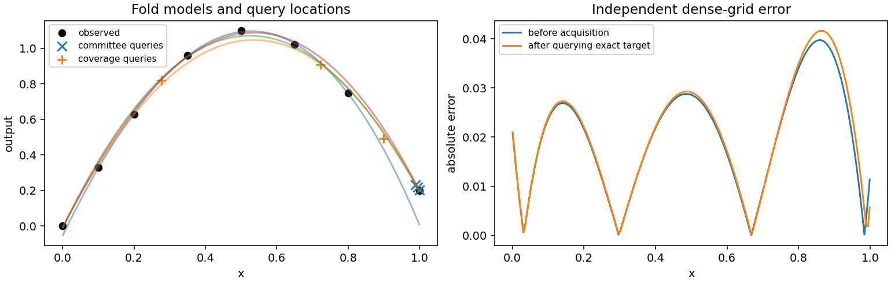

Explicit ensembles and active learning
When observations are expensive
Use active learning when evaluating the true response costs much more than fitting a surrogate: a laboratory experiment, a simulation, or a multiobjective optimization run may take minutes or hours per parameter. Instead of collecting another large uniform batch, fit several models, identify uncertain regions, and spend a small additional budget there. The objective is better predictions for a fixed observation budget, rather than simply a smaller training residual.
A committee is a collection of models fitted to different subsets of the same
observations. Where their predictions differ, the data may not determine the
response reliably. query_by_committee ranks a supplied candidate pool by
that disagreement. farthest_points offers a complementary strategy: it
covers gaps in parameter coordinates without needing any fitted models.
Use coverage when observations are initially sparse or committee members agree
because they all share the same restrictive degree.
Neither acquisition function evaluates your simulator or modifies a fit.
They return Points with their cell IDs, so the application controls costs,
measurement failures, data storage, and the next refit. A query is a request
for a future observation; a prediction at that point is not a substitute for
observing its actual response.
Build a committee
The complete example uses a scalar response on a line segment. Each row is
[1-x, x]; x is an experiment setting between zero and one. The eight
initial observations deliberately leave uneven gaps. In a real experiment,
replace response with the expensive measurement function.
import torch
from torch_bsf import BezierSpace, Ensemble, Points, Samples, fit
from torch_bsf.model_selection import KFold, cross_validate
from torch_bsf.active_learning import query_by_committee, farthest_points
def coordinates(x):
return torch.stack([1 - x, x], dim=1)
def response(points):
x = points.parameters[:, 1]
return (torch.sin(torch.pi * x) + .2 * x)[:, None]
space = BezierSpace.simplex(1, degree=3)
x = torch.tensor([0., .1, .2, .35, .5, .65, .8, 1.], dtype=torch.float64)
observed = Points(coordinates(x))
samples = Samples(observed, response(observed))
validation = cross_validate(space, samples, cv=KFold(4, seed=7))
assert validation.success
committee = Ensemble(validation.models)
q = torch.linspace(.001, .999, 200, dtype=torch.float64)
candidates = Points(coordinates(q))
proposed = query_by_committee(committee, candidates, n=3)
coverage = farthest_points(candidates, samples.points, n=3)
assert len(proposed) == len(coverage) == 3
validation.models contains one model per fold, trained without that fold’s
held-out observations. Constructing Ensemble is explicit: cross-validation
itself returns validation evidence, not a production predictor. All committee
members must use compatible spaces and the same output dimension. If members
have different degrees, refit them into one common space before constructing
this ensemble; matching input widths alone does not imply compatibility.
committee(points) computes the mean prediction. committee.members(points)
retains the individual predictions, with shape (members, points, outputs).
Use the latter to inspect disagreement rather than only plotting the mean.
One member has zero variance everywhere and cannot provide a useful committee.
Two members provide a fragile estimate; several different training subsets
usually provide a more informative comparison, at a greater fitting cost.
What each query measures
For candidate \(t\), member predictions \(b_k(t)\) and output count \(m\), the disagreement score is
The implementation uses population variance (unbiased=False), averages
across outputs, and returns the n largest scores. Ties follow candidate
order. This score is a heuristic for model disagreement, not a calibrated
posterior variance or confidence interval. Members can all be wrong together.
A straight-line committee may agree on a curved response; increasing the
candidate pool cannot repair a model class that cannot express the feature.
Because scores average squared deviations in output units, a numerically large output can dominate acquisition. If outputs use different units, explicitly choose and apply output transforms before building the committee. Transform new observations consistently and assess final errors after inversion. See Output scaling for leakage-free scaling. A common scalar multiplication of every output leaves rankings unchanged; changing relative output scales can change which experiments are requested.
Acquisition transfers finite predictions to CPU float64 and compares variance
mantissas and exponents, rather than materializing squared scores that could
overflow or underflow. Internal power-of-two scaling is restored when
combining outputs, preserving their relative units. Exactly agreeing members
have zero disagreement even at extreme magnitudes. Nearly tied nonzero scores
are compared using exact rational arithmetic on the supplied predictions.
This retains small output contributions that float64 summation could otherwise
erase; its additional CPU cost grows with the number of nearly tied candidates,
committee members, outputs, and prediction exponent range. Separated scores and
zero-disagreement groups use the vectorized float64 comparison.
Nonfinite member predictions
raise ValueError. Scaling cannot recover differences already lost to
rounding or overflow during model prediction itself.
farthest_points starts from each candidate’s distance to the closest
observed point in the same cell. It repeatedly selects the farthest point and
updates remaining distances to include that selection. Thus a batch spreads
out. An unobserved cell initially has infinite distance and receives priority.
Coordinates in different cells are not treated as points in one Euclidean
chart, even when two cells share a geometric face.
Bound acquisition memory
For a large candidate pool, set farthest_points(..., chunk_size=512).
The default is 1024. Both candidate and observation axes of each distance
matrix are bounded by this size, so a float64 matrix uses at most
8 * chunk_size**2 bytes (8 MiB at the default). Distance-kernel workspaces
and coordinate blocks require additional memory. Per-candidate minimum
distances are retained, rather than the full candidate-by-observation matrix.
Selected-point updates are also split into chunks. Equal scores choose the
earliest remaining candidate, including duplicate coordinates. Returned
parameters preserve their autograd connection to the input candidates;
discrete selection does not retain an acquisition-distance computation graph.
For one cell with C candidates, O observations, coordinate width D and n
queries, arithmetic work remains O(C * O * D + n * C * D). Auxiliary
memory is O(C + O + chunk_size**2 + chunk_size * D) in addition to input
coordinates and CPU float64 conversion. Smaller chunks trade lower peak
memory for more Python and kernel calls. The dense and chunked algorithms
use direct coordinate differences rather than expanding squared norms into
matrix products. This retains tiny separations between nearby points even
when a cell has more than 25 candidates or observations, where PyTorch would
otherwise switch distance algorithms. Direct differences may be slower than
matrix multiplication for large blocks; the distance-matrix memory bound
and arithmetic complexity above are unchanged.
Measure this tradeoff on your machine from the repository root:
PYTHONPATH=. python examples/benchmark_farthest_points.py \
--candidates 10000 --observed 2000 --dimensions 4 \
--select 8 --chunks 256 1024 --repeats 3 --output acquisition.json
Each dense/chunked measurement runs in a fresh CPU process with one PyTorch thread and the same seed. JSON records input sizes, chunk setting, selection, elapsed acquisition time, pre-acquisition and process peak RSS, Python, PyTorch and platform. RSS includes interpreter/import/input costs; it is not the size of the distance matrix alone. This benchmark measures exact greedy selection, without promising a speedup or using a fixed timing threshold.
Tune the observation budget and candidate pool
Setting |
Increasing it does this |
Practical starting point |
|---|---|---|
|
Requests more observations per round. Committee queries may cluster. |
Start with a small batch that fits the measurement budget. |
Candidate count |
Resolves narrower regions, while increasing prediction and distance work. |
Use a few hundred points for a curve, then check pool sensitivity. |
Fold count |
Builds more committee members with larger training subsets per member. |
Use three to five folds if each training fold remains identifiable. |
Polynomial degree |
Adds flexibility, potentially increasing disagreement in sparse regions. |
Choose by validation rather than maximizing acquisition variance. |
|
Changes the actual subsets or candidates; it is not a variance knob. |
Fix it for comparisons; repeat with other seeds to assess stability. |
n must be positive and cannot exceed the pool size. It counts candidate
rows, so duplicate coordinates in the pool can result in duplicate physical
experiments. Remove previously observed rows and exact duplicate candidates
before acquiring. For a finite catalogue, also remove infeasible or unavailable
experiments before scoring; neither function understands external constraints.
For a multi-cell space, draw candidates with sample(space, ..., seed=...)
or assemble them with Points.from_cells. Default random sampling gives
equal probability to maximal cells, which may differ from physical volume.
Choose cell_weights deliberately if some cells deserve more measurement
budget. This changes where candidates exist, and hence where either acquisition
rule can choose. Points on explicitly supplied lower-dimensional faces keep
their face IDs throughout selection.
Committee selection uses a top-score batch, without a diversity penalty.
Increasing n can therefore put every query near one uncertain endpoint.
If experiments should span the domain, compare with farthest_points, or
alternate separate coverage and disagreement rounds. Record which policy was
used, and keep a fixed independent evaluation set so that changes in training
coverage do not hide a regression elsewhere.
Observe, append and refit
Continue the earlier example by querying the exact synthetic response. The new model uses every original and newly acquired observation:
new_values = response(proposed)
updated = Samples(
torch.cat([samples.points.parameters, proposed.parameters]),
torch.cat([samples.values, new_values]),
cell_ids=torch.cat([samples.points.cell_ids, proposed.cell_ids]),
)
before = fit(space, samples).require_success()
after = fit(space, updated).require_success()
test_points = Points(coordinates(torch.linspace(0, 1, 401, dtype=torch.float64)))
with torch.no_grad():
before_mse = (before.model(test_points) - response(test_points)).square().mean()
after_mse = (after.model(test_points) - response(test_points)).square().mean()
assert torch.isfinite(before_mse) and torch.isfinite(after_mse)
For weighted observations, concatenate the original weights and the new measurement weights as well. Omitting weights, as above, intentionally treats each measurement equally. Do not silently discard a failed measurement and insert a surrogate prediction in its place. Retry it, exclude it with a record of the failure, or revise the feasible candidate domain.


Fig. 17 Left: four fold models, eight observations, three committee queries and three coverage queries. Right: absolute error before and after observing the exact response at the committee queries and refitting the same cubic space. Error can improve in one region and worsen in another.
The figure is generated by examples/generate_guide_figures.py. Its JSON
records the candidate count, fold seed, selected coordinates and dense-grid
MSEs in metrics.json.
In this particular round, dense-grid MSE rises from about 0.000510 to
0.000547: the top-score queries cluster near the right endpoint. Compare a
smaller query batch or a coverage round before spending more experiments
in the same region. The response is noiseless in this experiment; acquisition under measurement
noise can behave differently. No universal improvement per round is promised.
Stop when independent error meets your requirement, the remaining measurement budget is exhausted, or several rounds cease to improve the relevant metric. Keep the original observations, the exact candidate pool and each round’s queries to make the result reproducible. Recompute the committee after each round: reusing old members ranks uncertainty under an outdated training set. For model selection before acquisition, see Cross-validation and degree search; for exploratory candidate generation and coverage, see Sampling and grids and Grid sampling.